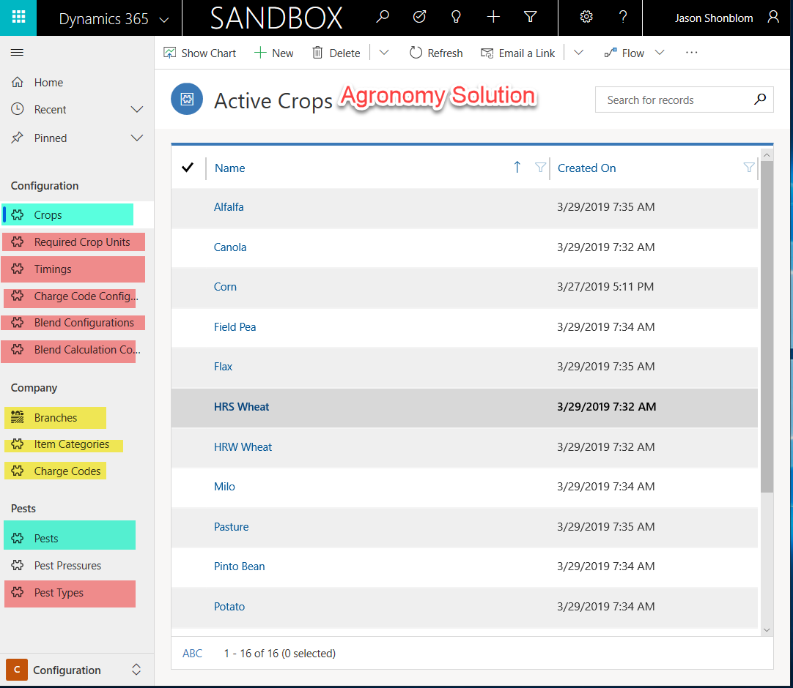

Configuration Setup CRM
To begin configuration setup in CRM, first import LevCore Solution followed by importing Agronomy Solution.
Migrate the ESG Configuration data using the Configuration Migration Tool.
- This tool can be downloaded at https://docs.microsoft.com/en-us/dynamics365/customer-engagement/developer/download-tools-nuget
Ensure an Application User has been created with admin security roles assigned.
If integrating records from CRM to AX, you will need to create steps on the service endpoint using the Plugin Registration tool.
Steps will also need to be created on plugins which require the pricing service. The configuration will look like this:
{
"clientappid": "da7c3de3-5555-49ab-8465-d01e8cd22e58",
"clientappsecret": "dradgg38ddszLzgqbcZ3/8sG2FbC/BSWxnCtXzJsWP8=",
"tenant": "https://login.microsoftonline.com/5555a5b1-fbt8-465b-ad9d-21e21129e610/oauth2/token",
"uristring": "https://environment22c2251c662a7e541devaos.cloudax.dynamics.com/api/services/LevPricingServices/PricingService/getPricing",
"resource": "https:// environment22c2251c662a7e541devaos.cloudax.dynamics.com",
"username": "John.smith@email.com",
"password": "plaintextpassword"
}
Setup the data through integrations, create it in CRM, or import data packets.

Entities in pink must be set up in CRM.
Entities in yellow will integrate over from FinOps.
Entities in green will integrate from Agsync.



Once item categories have been either created or imported in, the filtered xmls on the Plans and Batch Plans will need to be updated to reflect the item category GUIDs within your environment.
- The Proposal OOB Proposal line Subgrids will also require filter updates to reflect the Item Category's in your environment.